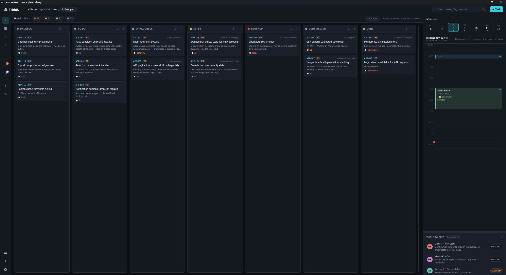
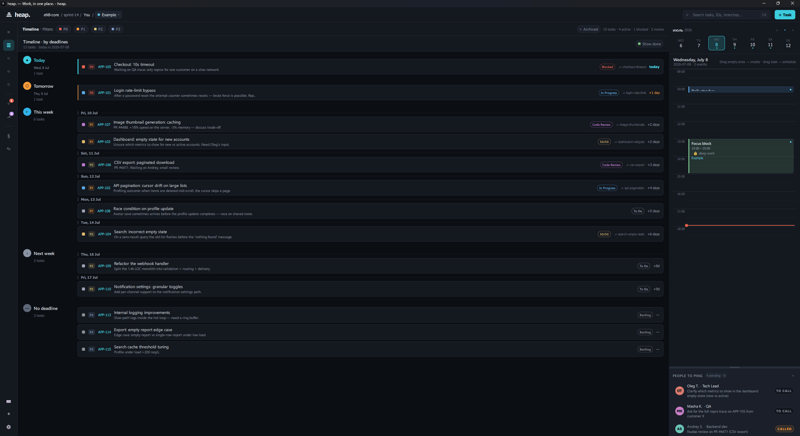
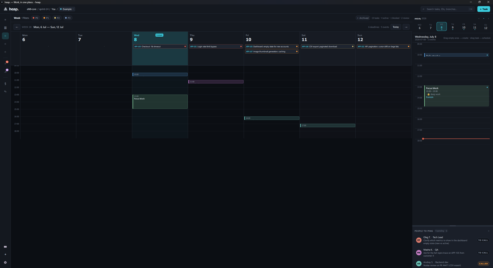
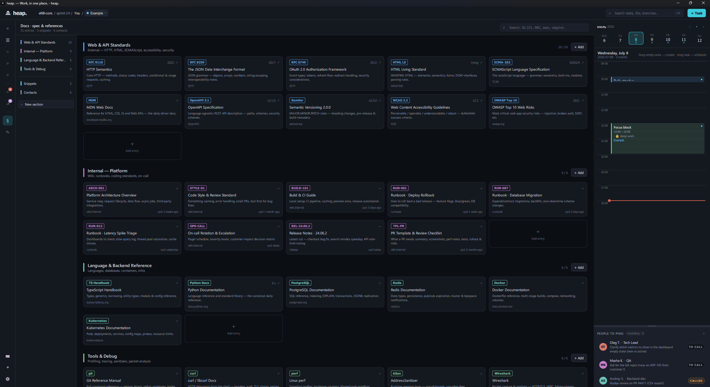
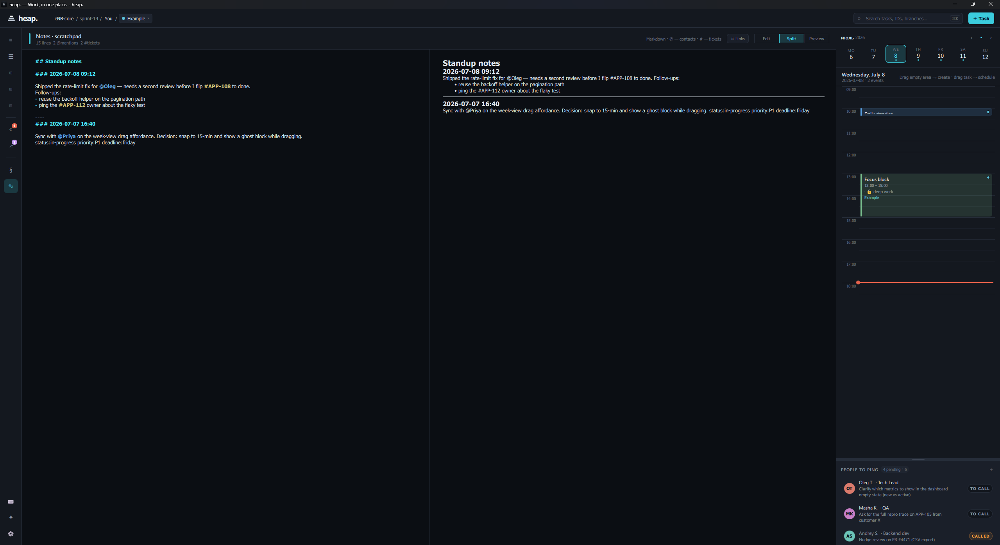
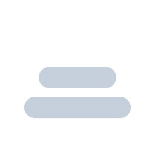

00 overview
A native desktop board, calendar, and notebook for engineers.
heap. is a single-binary Qt 6 / QML application. Tasks, events, docs, snippets, and contacts live side by side in a per-profile workspace, persisted as a JSON blob on your own disk. No Electron, no browser, no servers, no telemetry — and the board is git-aware.
local-first · git-aware · keyboard-first · single binary · mit

live preview01 inside
heap. ships as a single native binary. The board, the calendar, the docs canvas, and the markdown notebook share one window, one keyboard map, and one JSON state file under QStandardPaths::AppDataLocation.
Profiles are feature-scoped workspaces with JSON import and export. A 60-second background tick auto-archives done tasks, surfaces blocked-stuck warnings, and fires deadline and standup reminders via the system tray. Quiet hours are respected.
02 features
Every surface is rendered in QML with the same palette and the same keyboard model. There is no web view and no embedded browser. The board column you drag, the calendar block you resize, and the markdown line you edit all live in the same process and the same state file.
Drag-and-drop columns, status color picker, per-card priority chips, branch decoration, scheduled-time pill.
Overdue, today, tomorrow, week, and later buckets. Sub-grouping by date, show-done toggle.
7-day grid with all-day deadline chips and an hourly event grid. Drag, resize, and cross-day move.
Drag-to-create events, top and bottom resize, drop a task to schedule a focus block, live now-line.
Custom sections (API, internal, C++, tooling) with custom fields. Snippet editor with syntax highlighting. Contact cards.
Per-profile markdown canvas with @people and #ticket autocomplete.
Feature-scoped workspaces. JSON import and export. Each profile owns its own tasks, people, statuses, docs blob, and notes blob.
Ctrl+K fuzzy search across tasks, docs, snippets, contacts, people, and profiles.
60-second tick auto-archives done tasks, surfaces blocked-stuck warnings, fires deadline and standup reminders. Quiet hours respected.
Watches the working copy: the current branch is matched to a task by id, the card is decorated with its branch, and a focused-repo banner surfaces branch and PR state — no manual linking.
03 screens
A guided tour of the surfaces you'll actually use. Every screenshot is the real QML app on a real workspace — same palette, same keyboard, same JSON state file behind it.
Status columns from backlog through done, with a pinned calendar and a people pane on the right. Priority filters and the archived strip live at the top.

Tasks bucketed by overdue, today, tomorrow, this week, and later. Sub-grouped by date with a show-done toggle and accent stripes for priority.

7-day grid with all-day deadline chips above the hourly event canvas. Drag, resize, and cross-day move directly on the grid.

Custom sections (API, internal, C++, tooling) with custom fields. A snippet editor with syntax highlighting and contact cards sit alongside.

Per-profile markdown canvas with @people and #ticket autocomplete. Persists to the same JSON workspace as everything else.
04 build
The build is plain CMake. No package manager, no submodule recursion, no codegen. Qt 6.4+ and a C++20 toolchain are the only prerequisites.
Prefer a binary? A Windows installer, a Linux AppImage, and a portable zip ship on every release.
cmake -S . -B build -DCMAKE_BUILD_TYPE=Release && cmake --build build -j
sudo apt install \
qt6-base-dev qt6-declarative-dev \
libqt6svg6-dev cmake g++
cmake -S . -B build
cmake --build build -jbrew install qt cmake
cmake -S . -B build \
-DCMAKE_PREFIX_PATH=$(brew --prefix qt)
cmake --build build -jpacman -S --needed \
mingw-w64-ucrt-x86_64-toolchain \
mingw-w64-ucrt-x86_64-cmake \
mingw-w64-ucrt-x86_64-qt6-base \
mingw-w64-ucrt-x86_64-qt6-declarativeFull CLion + windeployqt walkthrough in the README.
05 brand
The mark is a three-node binary heap drawn at its smallest expressible form: one root, two leaves, two edges. The root is rendered in muted teal; everything else takes the foreground colour of the surface it sits on.
Tagline: Work, in one place. · Long form, editorial only: A quiet place for the work you owe.

mark primary
lockup mark + wordmark